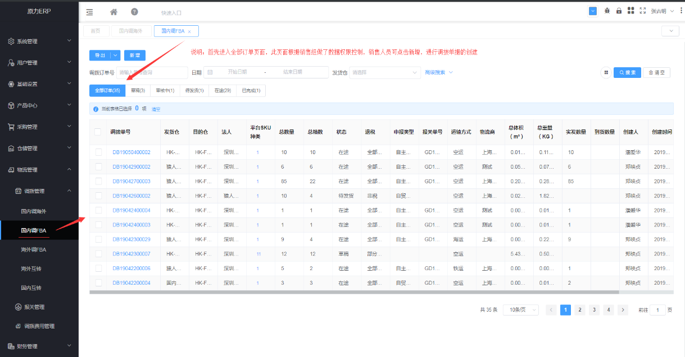
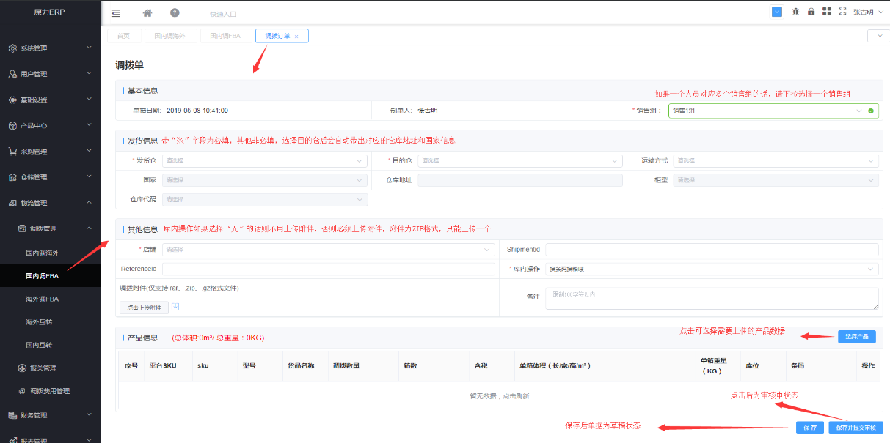
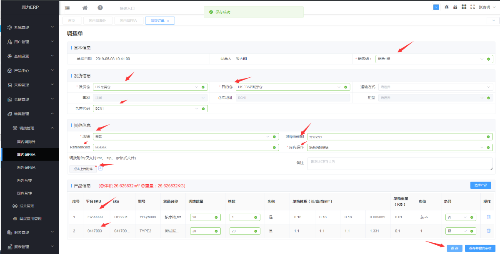
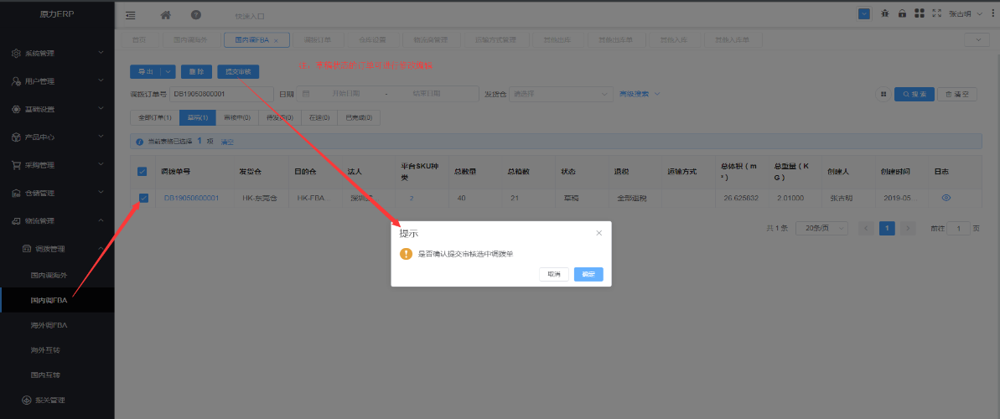
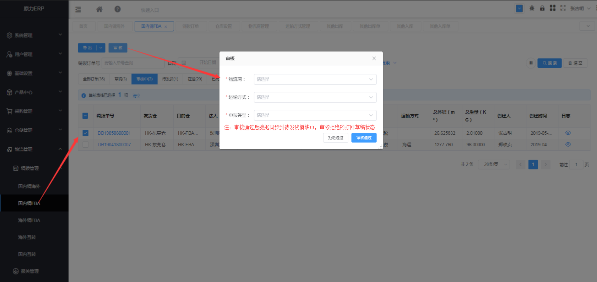
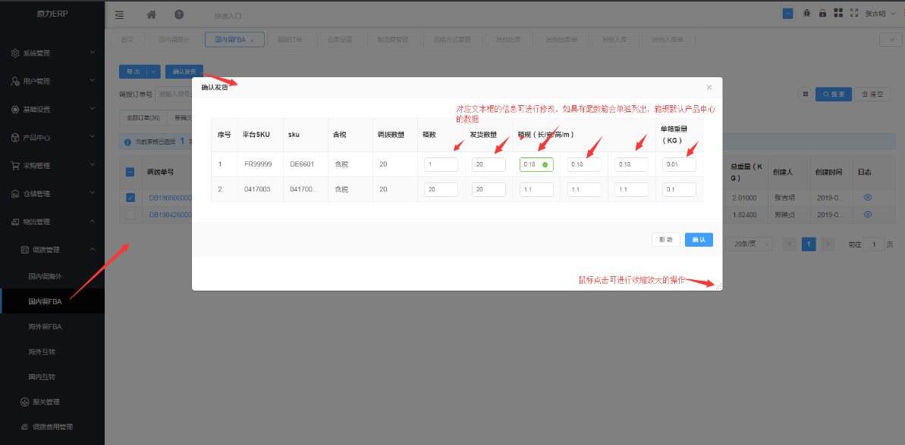
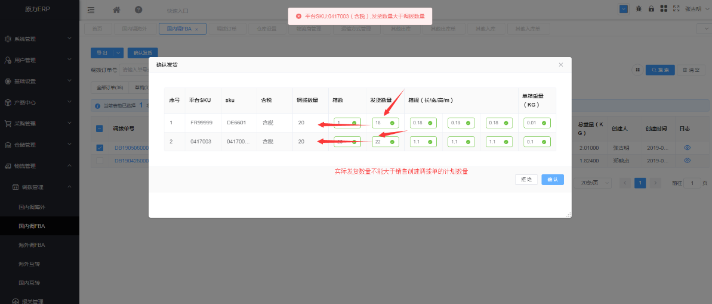
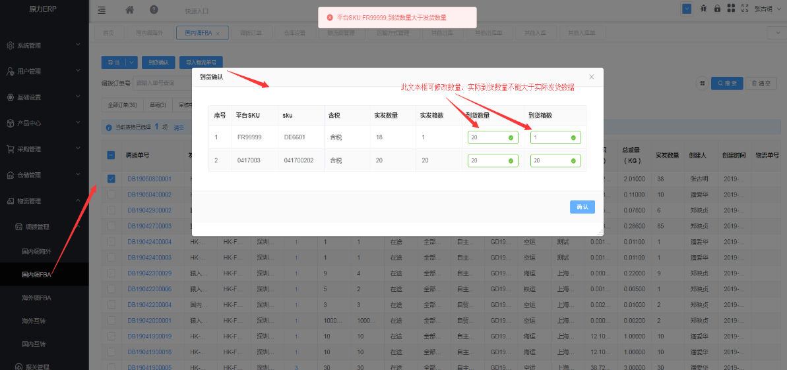
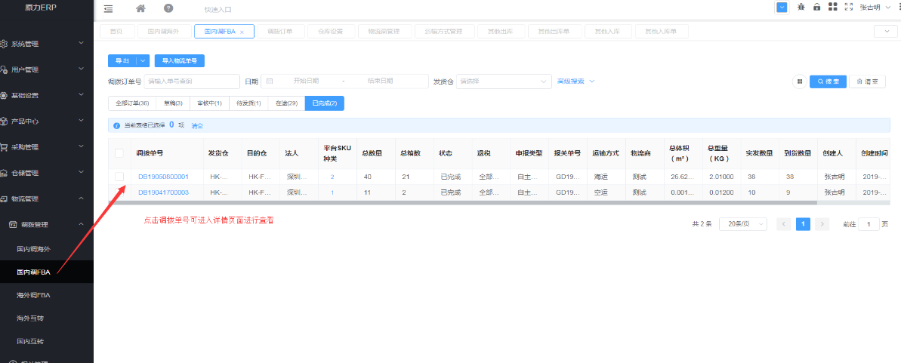

调拨管理
调拨单操作指南
注意：1.调拨单模块按照调拨类型分为“国内调FBA、国内调海外、国内互转、海外互转、海外调FBA”5个模块；
2.每一种类型的调拨单根据其处理进度分不同页签，管理上可根据页签状态分配相应角色的人员进行操作。
第一步：登录北极星系统--点击左侧菜单栏中的“物流管理”---点击调拨管理---选择调拨类型点击进入页面（操作手册演示国内调FBA仓）

数据展示维度：调拨单号
【新增】操作按钮，用于新增调拨单操作，点击跳转至新增页面；
【导出】操作按钮，根据搜索条件过滤的数据导出EXCEL格式，默认限制导出1万条数据；
第二步：点击新增，进行调拨单据的创建(通常是销售相关人员创建单据)


第三步：点击进入“草稿”页签，勾选对应的单据编号点击“提交审核”（此操作通常由销售相关人员操作）

【删除】操作按钮，用于删除草稿状态调拨单操作；
【提交审核】操作按钮，勾选调拨单点击此按钮后，数据流转至下一环节；
第四步：点击进入“审核中”页签，勾选对应的单据编号点击"审核"（此操作通常由物流/仓库相关人员操作完成）

【审核】操作按钮，点击后弹框录入相关信息，审核通过后数据流转下一环节，拒绝后数据回滚至草稿状态；
第五步：点击进入“待发货”页签，勾选单据点击确认发货，可相应的针对FNsku修改实际的发货箱规和重量（此操作通常由仓库相关人员操作完成）


【确认发货】操作按钮，点击后弹框录入相关信息，审核通过后数据流转下一环节，拒绝后数据回滚至草稿状态；
第六步：点击进入“在途”页签，勾选单据点击确认到货，可相应的针对FNsku修改实际的到货数量和箱数，同时可选择导入相应的物流跟踪号（此操作通常由物流/仓库相关人员操作完成）

【到货确认】操作按钮，点击后弹框录入相关信息，审核通过后数据流转下一环节，拒绝后数据回滚至草稿状态；
【导入物流单号】操作按钮，点击后根据弹框内容导入相关物流单号信息即可；
第七步：点击进入“已完成”页签，可查看全部处理完的单据信息

Created with the Personal Edition of HelpNDoc: Free EPub producer